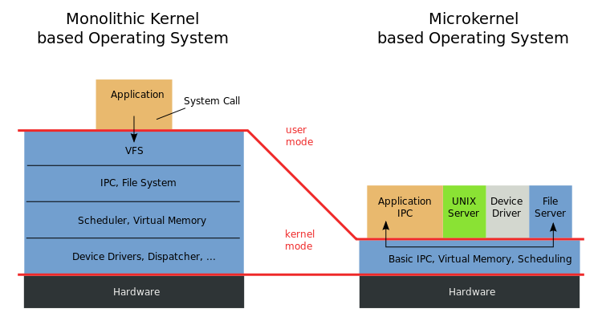

In this part, you can find all the papers I wrote during my curriculum just as those I wrote for fun or for the simple reason that I wanted to learn more about one subject.
|  |
Kernel Organization Paper |
Kernel Organization
During my studies at the IIT, I wrote a paper on the possible Kernel organizations for operating systems. Among them, I particularly described the monolithic kernel, the microkernel and the existing exokernels. I also described the organization chosen by the major operating systems available today. I compared these different solutions and discussed the trade-offs made in each of them.
IPv4 to IPv6 Network Paper |
Internet Protocol version 4 & 6
In my Computer Networks class at the IIT, I made an overview of the famous Internet Protocol versions 4 and 6. I described their architectures and their features. I also commented IPv6 deployment prospective in the upcomming years.
Big Data & Telecommunications Network Project Paper |
Software Project using Big Data and Cloud Computing
Particularly puzzled, then excited by Big Data Analytics and the Internet of Things, I decided to work on a project describing the opportunities represented by Big Data solutions for Telecommunication Service Providers.
This document is written as a project presentation with its constrains (time, cost, resources, behavior,...) of a fictive end-to-end software allowing TSPs to collect customers' data (such as location, paths, tweets, comments, etc.). Relevant and meaningful pieces of information are then extracted from these data to sell them to other companies providing personalized services to customers.To this extent, I present an applications located in smartphones and tablets collecting data generated by the user and sending them to the Cloud. These data are then processed using Hadoop, MapReduce and Data Mining techniques.
 |
Big Data and Cloud Computing for Business Intelligence Perspective |
Big Data, Cloud Computing and Business Intelligence
In this paper, I present the origin and make an in-depth study of the Big Data and Cloud Computing concepts, the technologies they allowed to develop and the opportunities they represent. I take a particular look to their perspective for Business Intelligence purposes.